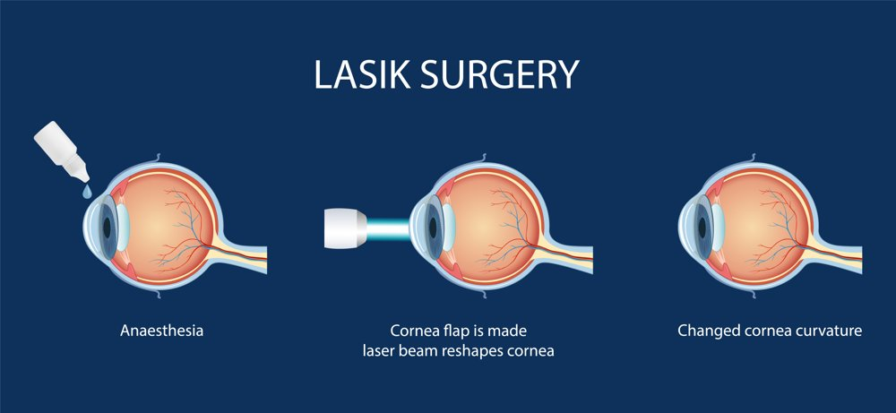
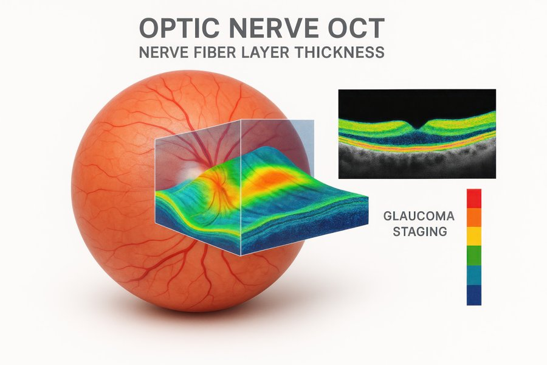
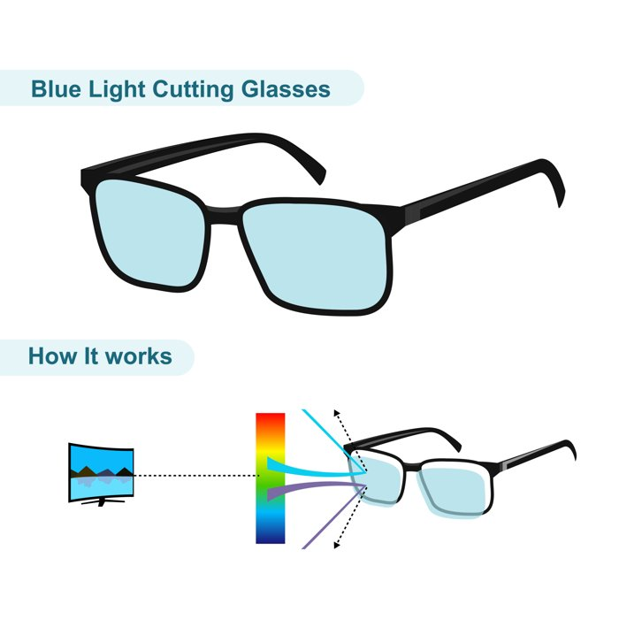

Our new vision care technology
Vcare Opticals has expanded its services with advanced eye-care technology for faster, more accurate care.

LASIK vision correction
We now offer LASIK consultations – a modern solution for correcting short-sightedness, long-sightedness and astigmatism.
- Detailed pre-assessment
- Guidance before you decide
- Post-procedure care for safety and confidence
Digital eye examination system
Our digital eye-testing equipment gives faster, more accurate vision assessments than traditional eye charts.
- Detects vision problems early
- Improves prescription accuracy

Optical coherence tomography (OCT)
OCT is an advanced scan that creates detailed cross-section images of the retina.
- Helps detect serious eye conditions early
- Especially useful for monitoring eye health in older adults

Blue light and digital eye strain assessment
Spending long hours on screens? This assessment identifies eye fatigue caused by computers and mobile devices.
- Identifies digital eye strain
- Recommends blue-light-filtering lenses for comfort and eye health
Virtual eye-care consultations (tele-optometry)
For minor concerns or follow-ups, get professional advice from home without visiting the clinic.
- Ideal for minor concerns and follow-ups
- No travel needed